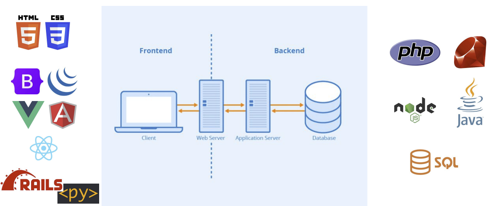
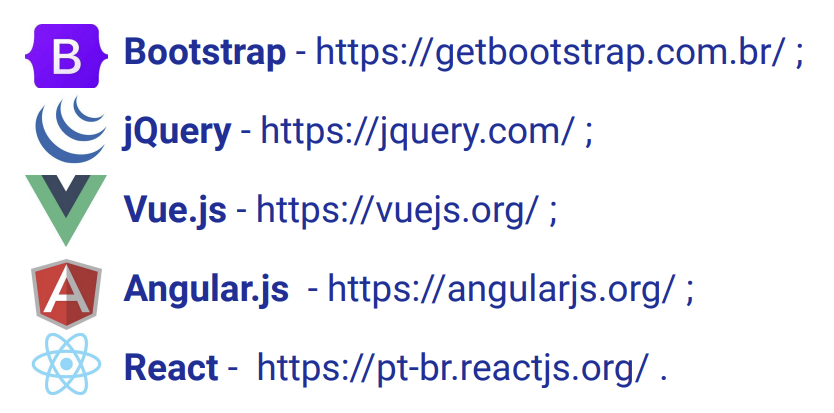
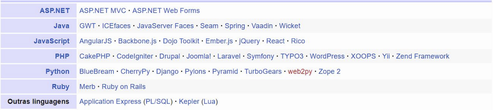

Disciplinas
-
FUNDAMENTOS DE WEB-T01-2024-2. Concluído
Materiais
Vídeo 1 - [UFMS Digital] Fundamentos de Web - Módulo 1. sendProf° ministrante: Luciano Édipo Pereira da Silva.
Conteúdo
Front-end Javascript.
- Unidade 1 - Tecnologias Front-end
- Unidade 2 - Front-end baseados em Javascript
Tecnologias Front-end.
- FrameWork
- Abstração que captura funcionalidades comuns a várias aplicações.
- Reuso
- Extensibilidade
- Segurança
- Eficiência
- Completeza
Front-end baseados em Javascript.
jQuery.
Foco na facilidade de manipular árvore DOM e Eventos
- Código Aberto
- Lançamento: 2006
- Versão Atual: 3.6.3/2018
Ex quem usa: Uber/Reddit
Angular.js.
Foco na facilidade de manipular árvore DOM e no uso do MVC e JSON
- Código Aberto
- Lançamento: 2010 (Google)
- Versão Atual: 1.8.2/2020
Ex quem usa: Google.org/ Paypal Community
Bootstrap.
Foco no Estilo e Fornecimento de elementos visuais
- Código Aberto
- Lançamento: 2011 (Twitter)
- Versão Atual: 5.1.3/2022
Ex quem usa: Twitter
Vue.
Foco na composição de componentes/incremental
- Código Aberto
- Lançamento: 2014
- Versão Atual: 2.6.10/2019
Ex quem usa: Adobe/Xiaomi
React.
Foco na otimização de atualização e atividades simultâneas
- Código Aberto
- Lançamento: 2013 (Facebook)
- Versão Atual: 17.0.2/2021
Ex quem usa: Facebook/Instagram
Frameworks WEB
Bibliografia.
- ANGULARJS. AngularJS — Superheroic JavaScript MVW Framework. Disponível em:
- BOOTSTRAP. Bootstrap em Português. Disponível em:
- FLATSCHART, Fábio. HTML 5-Embarque Imediato. Rio de Janeiro: Brasport, 2011.
- JS FOUNDATION. jQuery. Disponível em:
- MARINHO, Antônio Lopes; CRUZ, J. L. Desenvolvimento de aplicações para internet. São Paulo: Pearson Education do Brasil, 2017.
- META OPEN SOURCE. React. Disponível em:
- MILETTO, Evandro Manara; DE CASTRO BERTAGNOLLI, Silvia. Desenvolvimento de Software II: Introdução ao Desenvolvimento Web com HTML, CSS, JavaScript e PHP. Porto Alegre: Bookman Editora, 2014.
- YOU, E. Vue.js. Disponível em: